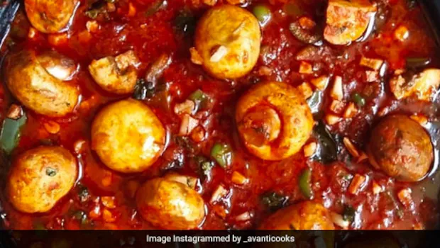
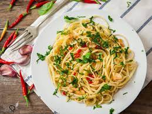

1.Mushroom manchurian:

Anyone who likes Mushrooms, will love Mushroom Manchurian to its death.
It is rich in Vitamin D and mushroom manchurian dry is one of the best
ways to gorge on its goodness while pleasing taste buds with its spicy taste.
Additionally, they are rich source of protein and hence it’s suitable to be
served to kids. It is a great party food and brings
a welcome change from routine gobi manchurian.
Mushroom Manchurian - A New Take On The Classic Indo-Chinese ManchurianIf
you are a fan of Chinese food, then this recipe is for you. This mushroom
manchurian recipe is full of spicy goodness! Read on.Priyaja BakshiUpdated:
September 26, 2021 14:17 ISTRead Time:2 min
Mushroom Manchurian - A New Take On The Classic Indo-Chinese Manchurian
Mushroom ManchurianHighlightsManchurian is a classic Indo-Chinese dish.
Mushroom manchurian is a delicious take on this dish!Find the recipe down below.
Did you know that the Chinese food that is served in your local
restaurant can only be found in India? That's right, chilli paneer,
veg Manchurian and chilli potato are all Indian inventions that were
inspired by Chinese flavours. Our mouths start salivating at the
thought of Indo-Chinese that's how much we love it. We have eaten
these classic Indo-Chinese dishes throughout our childhoods and
can't imagine a life without desi Chinese. This cuisine is packed with
tantalizing flavours that excite our tongues at every bite.
Also Read: 11 Best Indian Mushroom Recipes | Mushroom Recipes
Manchurian is a classic Indo-Chinese dish that people of all ages thoroughly enjoy.
We all have heard of chicken manchurian, veg manchurian and gobhi manchurian,
but have you ever heard of the mushroom manchurian? This dish is exactly as it sounds,
Manchurians made of mushrooms are bathed in the classic hot and spicy Indo-Chinese flavours.
So, if you are a fan of mushrooms, then this should definitely be a part of your recipe book.
Spend the weekend eating mushroom manchurian and fried rice that will satisfy your Chinese cravings.
2.Noodles :

Noodles are a type of food made from unleavened dough which is
rolled flat and cut, stretched or extruded, into long strips or strings.
Noodles can be refrigerated for short-term storage or dried and stored for future use.
Noodles are usually cooked in boiling water, sometimes with cooking oil or salt added.
They are also often pan-fried or deep-fried. Noodle dishes can include a sauce or noodles
can be put into soup. The material composition and geocultural origin is specific to
each type of a wide variety of noodles. Noodles are a staple food in many cultures
(see Chinese noodles, Japanese noodles, Korean noodles,
Filipino noodles, Vietnamese noodles, and Italian pasta).
Noodles are a type of food made from unleavened dough which is rolled flat and cut,
stretched or extruded, into long strips or strings. Noodles can be refrigerated for
short-term storage or dried and stored for future use. Noodles are usually cooked
in boiling water, sometimes with cooking oil or salt added.
noodle, a cooked egg-and-flour paste prominent in European and Asian cuisine,
generally distinguished from pasta by its elongated ribbonlike form. Noodles are
commonly used to add body and flavour to broth soups. They are commonly boiled or sautéed and
served with sauces and meats or baked in casseroles.
Asian noodles are made primarily from starch ingredients
other than flour, although the recipes for some Asian pan-fried
and stir-fried dishes allow the substitution of wheat-flour noodles
for the Chinese mein. Noodles made from rice flour or the starch of
the mung bean are softened in water and then boiled and drained in preparation
for being fried or added to soups.